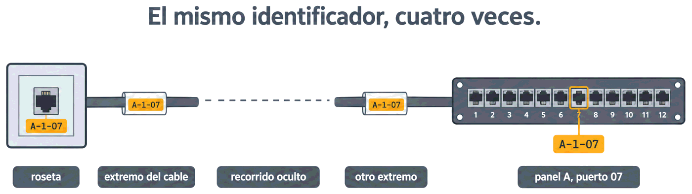

Todo lo demás de hoy —el código de identificación, el registro de enlaces, el dosier y la garantía del sistema— procede de las normas de administración de cableado y de la práctica profesional.
Contenido del día
1. Por qué se documenta
Imagina la escena, que es de las más frecuentes en este oficio: un puesto se queda sin red. Abres el armario y te encuentras 48 latiguillos idénticos, sin una etiqueta. ¿Cuál corresponde a ese puesto?
| Sin documentación | Con documentación |
|---|---|
| Media hora siguiendo cables con la mano, o probando puertos a ciegas | Se mira la tabla: puesto 1-14 → panel A, puerto 14 |
| Cada cambio añade desorden | Cada cambio se anota y el sistema sigue siendo comprensible |
| Solo quien lo instaló entiende la instalación | Cualquier técnico puede trabajar en ella |
| Ampliar obliga a investigar primero | Ampliar es consultar qué hay libre |
El cableado estructurado se diseña para durar veinte años y para que cualquiera pueda trabajar en él. Sin documentación, las dos cosas son falsas: la instalación dura lo que dure la memoria de quien la montó.
2. El código de etiquetado
Documentar empieza por poder nombrar cada cosa. Y nombrar significa inventar un código y aplicarlo sin excepciones. Un código útil cumple cuatro condiciones:
| Condición | Por qué |
|---|---|
| Único: no hay dos elementos con el mismo identificador | Obvio, y se incumple más de lo que parece al ampliar |
| Jerárquico: refleja edificio, planta, armario y puerto | Leyendo el código ya sabes dónde buscar |
| Estable: no depende de quién se siente ahí ni de para qué se use | Los usuarios cambian de sitio; las tomas, no |
| Corto: tiene que caber en una etiqueta pequeña | Si no cabe, no se pone |
A - 1 - 07
│ │ └── número de toma dentro de esa planta
│ └──────── planta
└────────────── edificio o armario
A-1-07 = edificio A, planta 1, toma 7
B-0-23 = edificio B, planta baja, toma 23Con tres campos basta para una instalación normal. Si hay varios armarios por planta, se añade
uno: A-1-2-07 para el armario 2.
3. Qué se etiqueta y cómo
El principio es simple: el mismo identificador aparece en los dos extremos del enlace, y en todo lo que haya por el camino.
| Elemento | Qué lleva |
|---|---|
| Roseta | El identificador del enlace, visible sin desmontar nada |
| Puerto del panel | El mismo identificador que su roseta |
| Cable, en los dos extremos | El identificador, en una etiqueta a unos centímetros del conector |
| Armario | Su nombre y, dentro, un esquema de qué hay en cada U |
| Paneles y switches | Su identificador dentro del armario: A, B, SW1… |
| Latiguillos del armario | Opcional, pero ayuda mucho en armarios grandes |
| Fibra y troncales | Identificador del enlace y sentido, como viste en la Semana 6 |
- Impresas, no escritas a mano: la tinta de un rotulador se borra con el roce y a los dos años no se lee.
- Duraderas: resistentes al roce, al calor y a la humedad del sitio donde van.
- Legibles sin desmontar nada ni mover el haz de cables.
- Coherentes: el mismo formato en toda la instalación.

[roseta A-1-07] ══ cable «A-1-07» ══════ cable «A-1-07» ══ [panel A, puerto 07]
▲ ▲
se lee sin abrir nada se lee desde delante del armario4. La tabla de enlaces
Las etiquetas identifican; la tabla de enlaces —o registro— es donde se guarda todo lo que se sabe de cada uno. Es el documento que más se consulta en la vida de una instalación:
| ID | Ubicación | Armario | Panel · puerto | Cat. | Long. | Certificación | Uso actual |
|---|---|---|---|---|---|---|---|
| A-1-07 | Despacho 12, pared norte | ARM-1 | A · 07 | 6 | 78 m | PASS 12/03 | PC contabilidad |
| A-1-08 | Despacho 12, pared norte | ARM-1 | A · 08 | 6 | 79 m | PASS 12/03 | Libre |
| A-1-14 | Sala reuniones | ARM-1 | A · 14 | 6 | 61 m | FAIL 12/03 | Pendiente |
- Certificación: saber que ese enlace aprobó, y cuándo, evita repetir medidas y sirve para reclamar si algo venía mal de origen.
- Uso actual: es la única columna que cambia a menudo, y la que responde a «¿qué tomas tengo libres?» sin ir a mirar.
5. Los planos
Un plano de cableado no es un plano de arquitectura: es el mismo plano del edificio con tres capas de información encima.
| Capa | Qué muestra |
|---|---|
| Ubicación de tomas | Dónde está cada roseta, con su identificador |
| Recorridos | Por dónde van las canalizaciones: esto es lo que evita taladrar encima de un cable |
| Armarios | Dónde están, y un esquema aparte de qué hay dentro de cada uno, U por U |
6. El dosier de entrega
Todo lo anterior se entrega junto, en papel y en digital. Un dosier completo tiene seis bloques:
| # | Documento | Contenido |
|---|---|---|
| 1 | Memoria | Qué se ha instalado, con qué criterios, qué normas se han seguido y qué categoría se ha certificado |
| 2 | Planos as-built | Tomas, recorridos y armarios, tal como han quedado |
| 3 | Tabla de enlaces | El registro completo, enlace por enlace |
| 4 | Informes de certificación | Uno por enlace, con la norma, el modo y los márgenes |
| 5 | Inventario de material | Marcas, modelos y cantidades: cable, paneles, rosetas, armarios |
| 6 | Garantías | Del material y, si procede, del sistema |
No es un trámite posterior ni un favor: sin él, el cliente no tiene forma de saber qué le han instalado ni de demostrar que cumple. Por eso la entrega de la documentación suele ser una condición de aceptación y un hito de pago.
7. La garantía del sistema
Aquí aparece algo que sorprende a quien lo ve por primera vez. Además de la garantía normal del material, existe la garantía del sistema, que da el fabricante del cableado y que cubre el rendimiento del conjunto durante muchos años —habitualmente veinte o veinticinco—.
- Que todos los componentes —cable, conectores, paneles— sean suyos o estén homologados.
- Que la instalación la haya hecho un instalador certificado por él.
- Que se entregue la certificación completa de todos los enlaces.
- Que exista la documentación de la instalación.
Fíjate en lo que eso significa: la documentación y la certificación no son solo buenas prácticas, son la condición para que alguien responda del sistema dentro de quince años. Y explica por qué un instalador serio insiste en certificarlo todo aunque el cliente no lo pida.
8. Mantener la documentación viva
Una documentación desactualizada es peor que ninguna, porque induce a error. Y se desactualiza sola, con el uso: un puesto que se mueve, una toma que se reasigna, un switch que se cambia.
| Regla | En la práctica |
|---|---|
| Todo cambio se anota, en el momento | Cambiar un latiguillo de puerto son diez segundos; anotarlo, cinco |
| La documentación vive en un sitio conocido | Compartida, no en el ordenador de una persona |
| Revisión periódica | Una vez al año, comprobar que la tabla y la realidad coinciden |
| Los cambios grandes se recertifican | Si se añaden enlaces, se certifican y se añaden al dosier |
9. Resumen y errores frecuentes
- La administración es el subsistema transversal: sin ella, la instalación dura lo que la memoria de quien la montó.
- El código de etiquetado debe ser único, jerárquico, estable y corto. Por
ejemplo
A-1-07. - Se etiqueta la toma, no el usuario.
- El mismo identificador va en la roseta, en los dos extremos del cable y en el puerto del panel.
- Las etiquetas: impresas, duraderas, legibles y coherentes.
- La tabla de enlaces recoge ubicación, panel y puerto, categoría, longitud, certificación y uso actual.
- Los planos válidos son los as-built, no los de proyecto.
- El dosier: memoria, planos, tabla, certificaciones, inventario y garantías.
- La garantía del sistema depende de usar material homologado, instalador certificado, certificación completa y documentación.
| Se dice… | …pero en realidad |
|---|---|
| «La documentación se hace al final, si da tiempo» | Forma parte de la obra y suele ser condición de aceptación |
| «Etiqueto la roseta con el nombre del usuario» | Los usuarios cambian de sitio. Se etiqueta la toma |
| «Con etiquetar la roseta basta» | El identificador va también en el panel y en los dos extremos del cable |
| «Las etiquetas a rotulador se leen bien» | A los dos años, no. Impresas y duraderas |
| «Entrego el plano del proyecto» | Hay que entregar el as-built: lo que de verdad se ha instalado |
| «La garantía la da la tienda donde compré el cable» | La garantía del sistema la da el fabricante, y exige certificación y documentación |
| «Ya actualizaré la tabla cuando tenga un rato» | Una documentación desactualizada induce a error: es peor que no tenerla |
10. Repaso con flashcards
Piensa la respuesta antes de girar la tarjeta.
Quiz del día
15 preguntas · 20 minutos · Contesta sin volver a la teoría
El cronómetro no corre mientras lees: arranca al llegar aquí, al pulsar «Empezar quiz» o al marcar tu primera respuesta.
Resultados
Respuestas correctas: 0 / 0
Respuestas incorrectas: 0
Una oficina de dos plantas y 30 tomas, instalada y certificada, sin un solo papel. Hay que inventarle el código, rellenar la tabla, dibujar el plano y montar el índice del dosier.
→ Ir al laboratorio del Día 4 (60 min)
Síntesis de la semana, test semanal de 24 preguntas y el examen mensual del Mes 2, que empieza con un repaso de todo lo que has fallado durante el mes.